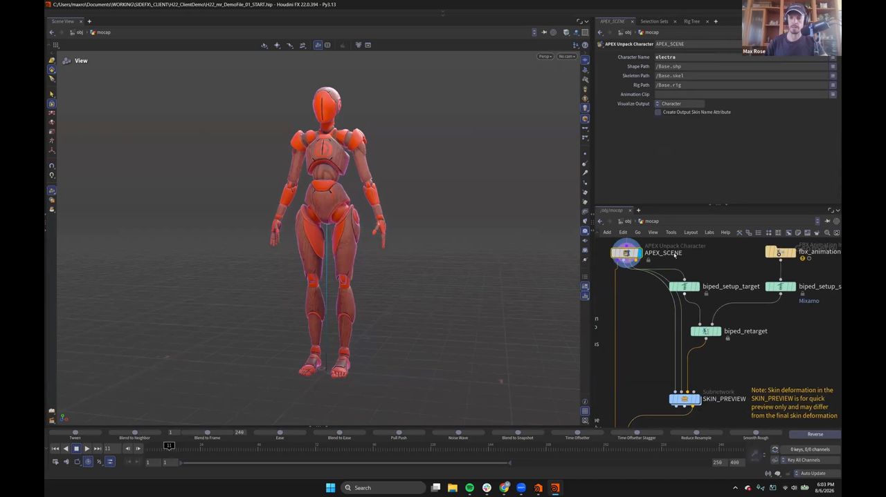
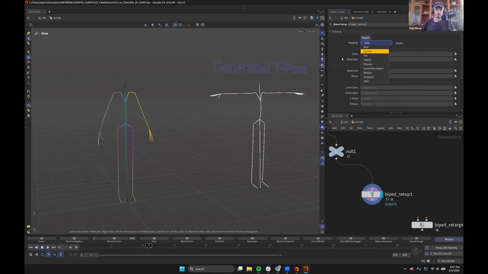
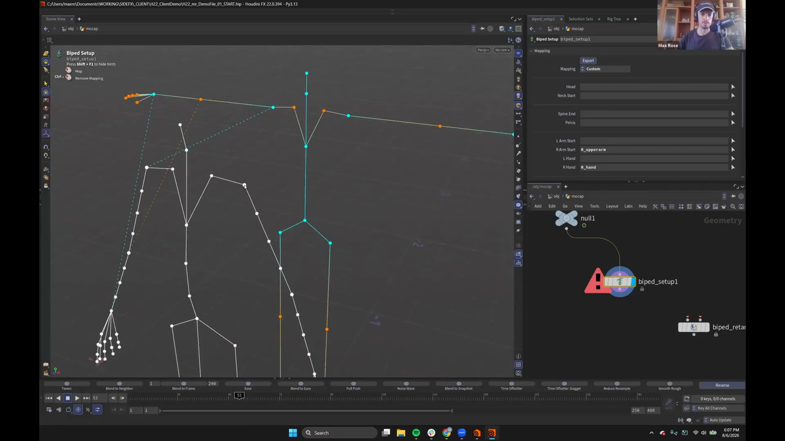

Houdini 22 KineFX アニメーション 6 — モーキャプを自作キャラにリターゲットする
出典: Animate in KineFX | Part II | Max Rose | Houdini Illume （SideFX 公式ウェビナー / 講師 Max Rose さん / Houdini FX 22.0.394 / 1:01:45 / 英語）の 00:00〜19:00 部分。 このページは、上記の動画を見ながら自分用にまとめた日本語の学習メモです。SideFX 公式の翻訳ではありません。 Part I は第1回から始まります。
Part II について
Part I ではアニメーションの基礎とセカンダリモーションを扱いました。 Part II のテーマは「レベルアップ」で、モーションキャプチャのワークフローと、 もう少し踏み込んだ手法を扱います。
題材は Electra という赤いロボット風の女性キャラクターです。
1. 今回の主役は3つのノード
Houdini 22 で新しくなった biped 系のノードが3つ紹介されました。
| ノード | 役割 |
|---|---|
Biped Setup | 骨格を biped の標準形にマッピングする |
Biped Retarget | マッピングした骨格同士でアニメーションを移す |
Apex Animation from Skeleton | 骨格のアニメーションをリグのコントロールに乗せる |
2. 手っ取り早い方法 — Apex Retarget to Rig

結論から言うと、Apex Retarget to Rig を置くだけで必要なものが一式そろいます。
これはレシピです。レシピとは、ノードのまとまりを保存しておいて、 いつでも呼び出せるようにしたものです。各ノードのパラメータも設定できます。
中身は上の画像のようになっています。
APEX_SCENE (Apex Unpack Character) ┐
├→ biped_setup_target ┐
fbx_animation (FBX Animation Import) ├→ biped_retarget → SKIN_PREVIEW
└→ biped_setup_s (Mixamo) ┘Apex Unpack Character のパラメータを見ると、
Character Name が electra、Shape Path が /Base.shp、
Skeleton Path が /Base.skel、Rig Path が /Base.rig になっています。
前回の Pack Folder と同じ命名です。
SKIN_PREVIEW についての注意書き
ネットワークに貼られていた付箋に、こう書かれていました。
SKIN_PREVIEW のスキン変形はあくまで簡易プレビュー用で、
最終的なスキン変形とは異なる場合があります。ここで見えている変形をそのまま最終品質だと思わないほうがよさそうです。
Apex Animation from Skeleton が何をしているか
このノードは焼くのに少し時間がかかります。何をしているかというと、
モーションクリップのデータを全部チャンネルプリミティブに変換しています。 これが APEX の求める形式で、すべてを APEX が読める形に変えているわけです。
変換が終わると、リグのコントロールにアニメーションが乗った状態になります。
あとは Scene Animate を置いて入れば、
全コントロールにキーが打たれた状態からアニメーション作業を始められます。
3. 手動で組んでみる
「中で何が起きているか見せたい」ということで、同じことを手で組む手順も示されました。 自作キャラクターで独自の biped setup を作りたい場合の流れです。
Apex Scene Add Characterでシーンに追加し、Electraと名付けますUnpack Apex Characterでアンパックして骨格を取り出します。キャラクター名の指定を忘れずに- 取り出した骨格を
Biped Setupに繋ぎます
繋いだ瞬間、ノードに SideFX という表示が出ます。
マッピングが自動で設定されたという意味です。
マッピングテンプレート

ドロップダウンには次のテンプレートが用意されていました。
| テンプレート | 備考 |
|---|---|
Auto | 自動判別 |
Custom | 自分でマッピングする |
File | 保存したマッピングファイルを読み込む |
SideFX / Mixamo / Unreal Mannequin / Rokoko / HumanIK / CMU | 既製のテンプレート |
独自のキャラクター体系がある場合は、マッピングを作ってファイルに保存し、 あとから読み込んで使い回せます。
Custom で手動マッピングする

Custom に切り替えると何も設定されていないのでエラーになります。
ノードを選んで Enter を押し、ステートに入ります。
ビューポートに骨格が2体出てきます。片方が Electra の骨格、 もう片方がマッピング先となる biped の標準骨格です。あとはジョイントをクリックしていくだけです。
青いジョイントをマッピングするだけで、赤いジョイントは自動で設定されます。 このノードは本当に賢くて、かなりのことを自動でやってくれます。
注意点として、Electra にはツイストジョイントがあるので、 腕はツイストではなく lower arm のジョイントを選ぶ必要があります。
ある程度クリックしていくと、ノードのほうが「もう十分」と判断します。
残っていた首と頭を足せば完了です。
画面のパラメータ欄には R_upperarm や R_hand といった
実際のジョイント名が入っていきます。
4. モーキャプ側を繋ぐ
FBX Animation Importでモーキャプを読み込みます- もう1つ
Biped Setupを置いて繋ぎます - Mixamo のリグだと自動判別され、設定が丸ごと自動で入ります
- 両方の
Biped Setupが T-Pose を生成します（画面に「Generated T-Pose」と出ます） - 2つを
Biped Retargetに繋げば、Electra の骨格にモーションが移ります
5. 覚えておくと迷わない規則 — 3入力3出力
これは知っておくと効く話でした。
Houdini でキャラクターに関わるノードは、すべて入力3つ・出力3つです。 順番はこうです。
| 順番 | 内容 |
|---|---|
| 1 | skinning geometry（スキニング用ジオメトリ） |
| 2 | rest skeleton（レスト骨格） |
| 3 | animated skeleton（アニメーション済み骨格） |
この順番どおりに繋げば、だいたい動きます。
例外は Unpack Character で、1つ目の出力だけは APEX リグそのものになります。
それ以外は上のパターンに従います。
すぐ結果を見たいとき
Apex Animation from Skeleton は焼くのに数秒かかります。
結果をすぐ確認したいだけなら Bone Deform に繋ぐのが早い、と紹介されていました。
6. レストポーズを直す
リターゲットした結果を見て「頭が下を向いていて、なんだか申し訳なさそうに見える」ということで、 初期ポーズを調整していました。
いまはまだ KineFX の領域です。アニメーションするために必ず APEX に行く必要はありません。 KineFX の中でできることもたくさんあります。
Biped Setup のノードステートに入ると、レストポーズを直接編集できます。
これがほぼ全身 FK のような操作感で、いじると変換が全部追従して更新されます。
気に入らなければ Match Pose で全部クリアしてやり直せます。
この記事のまとめ
- 新しい biped ノードは
Biped Setup/Biped Retarget/Apex Animation from Skeletonの3つ - 手っ取り早く済ませたいならレシピの
Apex Retarget to Rigを置くだけです - マッピングテンプレートは SideFX / Mixamo / Unreal Mannequin / Rokoko / HumanIK / CMU が既製で、自作もファイル保存できます
- 手動マッピングは青いジョイントを押すだけ。赤いジョイントは自動で決まります
- 腕はツイストジョイントではなく lower armを選びます
- キャラクター系ノードは3入力3出力（skinning geometry / rest skeleton / animated skeleton）で統一されています
- すぐ確認したいときは
Bone Deform、SKIN_PREVIEWの変形は最終品質ではありません
次はリターゲットしたモーションを Motion Mixer で複数組み合わせます。